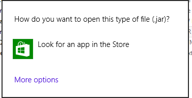
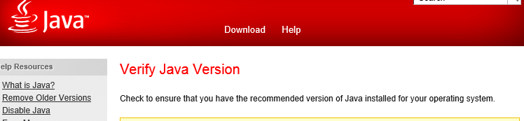
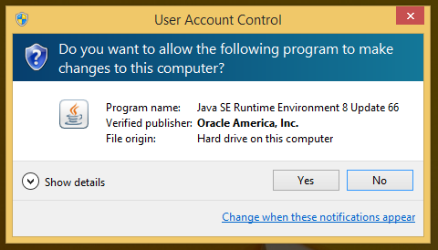
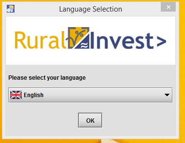
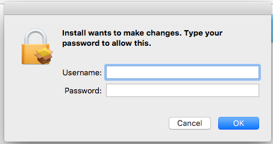
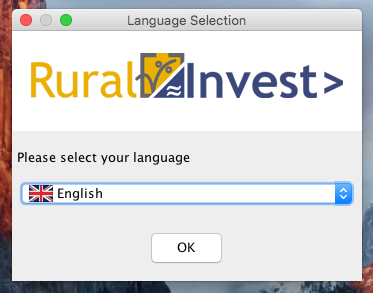

In order to install correctly please follow the instructions below.
Root/administrator privileges are necessary for installing RuralInvest. If you do not have admin rights on your machine, please ask your administrator to run the installer. Note that after installation, only user-level privileges are necessary to use RuralInvest.
Install RuralInvest by double-clicking the file "install-RuralInvest.jar".
If the following message appears, it means that you need to install Java before continuing.

In that case, go to the "jre" folder and double-click "jre.exe" to install Java. Upon completion, you may be prompted to verify Java: it is not necessary to actually do so and you may close the window.

At this point, install RuralInvest by double-clicking the file "install-RuralInvest.jar" and proceed.
If you see the below message, choose "Yes" to continue the installation.

You will then see the following window. Choose the most convenient language, click "OK", and follow the instructions. (The window may appear behind other windows that are already open. You may need to minimize or close other windows to see it.)

Install RuralInvest by double-clicking the file "Install". You will be prompted to confirm your username and password, or the username and password of the admin account.

After which, you will see the following window. It may take a minute, so please be patient. Then, simply choose the most convenient language, click "OK", and follow the instructions.
